The Concept
In this chapter we are going to discuss the goals behind the language design and implementation.
The First Generation
In this generation we did a lot of research to develop the main ideas behind the project
The Concept of The First Generation
In December 2005, I started to think about developing PWCT.
I started with many ideas and I tested each idea through practical development
In 2007, The core idea was very simple (Goal Designer instead of Code Editor)
We see this in the next screen shot, Instead of writing textual code directly, we follow a procedure of four simple steps
Select a component
Enter the data required for this component
Interact with the steps tree (If you need this)
Run the program
The next diagram demonstrates something similar to what I wrote using a pen and paper to explain the idea to my friends (The diagram uses screen shots from PWCT 2.0 that doesn’t exist at that time).
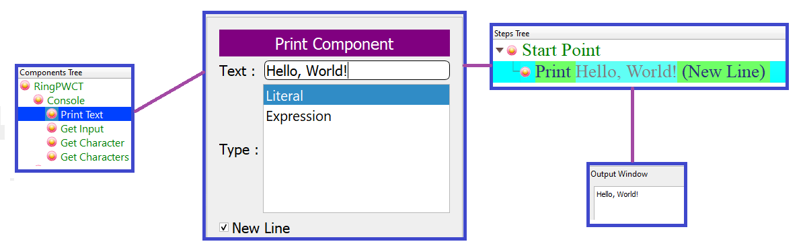
At that time, the advantages were very clear
Selecting components means we can explore the programming system and start using it without previous knowledge.
Separating data from instructions through the data-entry forms provide the ability for quick reuse
Using a GUI to program means easy support for translation (Arabic, English, French, etc.)
No Syntax Errors (Happy experience for beginners)
The generated steps tree (instead of source code) provides a chance for Maximum Readability
The generated steps could replace many lines of source code (Higher Abstraction)
The generated steps could be in many locations at the same time
Interaction with a tree (Steps Tree) provide the ability to control many nodes (Parent & Children) together (Faster)
The same component could generate different steps based on the data that we enter through data-entry forms
This design was enough to attract a few thouands of developers until 2009
from 2009 to 2013, We improved the system with the next features
Using Keyboard Shortcuts to improve the writability
Adding Colors & Customization to the Steps Tree
Improving a domain-specific language that are used for developing the components
Supporting more programming languages in the code generation layer
Show/Hide steps based on the context
Two modes (Syntax Directed Editor OR Free Editor + VPL Compiler)
Automatic Documentation (Generate HTML Files from Visual Programs)
Optional automatic update of programs after components update
Adding the Time Dimension
Using the Time Dimension we can
Move to a point in the past during development and run the program
Play programs as movies to learn how to create a program step by step
For example, the next program print numbers from 1 to 10 and print the Three message after the number 3.
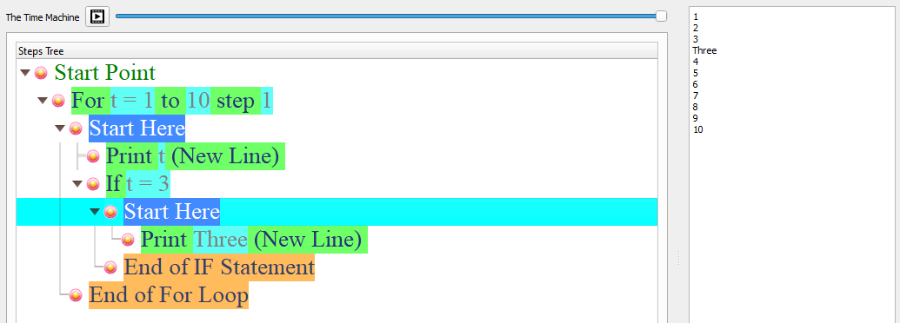
Using the Time Machine slider, we can move to the past and run the program before adding the if statement that print the Three message.
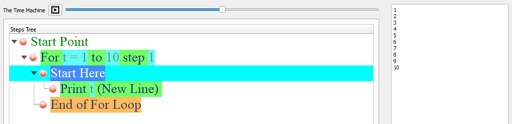
The previous screen shots uses PWCT 2.0 but, the same idea is implemented in the first generation of PWCT from 2011 (PWCT 1.8)
These updates were enough to attract hundered thousands of developers to download the product and try it!
The Disadvantages of the First Generation
It’s all about the implementation and the missing features!
The concept is very good, that attracted many developers with different background and they started asking about many things!
And Yes! some developers asked about improving the concept itself! (More innovation is required)
Some developers reported that using Code Editors is too much flexibile and faster in some situtations
Slow performance when using large visual source files
Visual Source Files are database files (not textual) which is not good for Version Control software
Support importing the source code (Convert source code files to Visual Source Files)
Opening many files and quick nagivation
Multiplatform support (Windows, Linux & macOS)
Support Web & Mobile development
Support more programming languages
Translation & Unicode
Modern Form Designer
Support powerful libraries and frameworks
More educational resources!
I started to think about all of these issues and feature requests and how I can implement them.
I discovered that I need a new programming language (Ring) that could help me to do all of this in an efficient way
The Second Generation
The second generation (PWCT 2.0) is developed using the Ring programming language
Our goal is to provide a more powerful version of the software that satisfy two conditions
To be an easy tool to start learning about real programming concepts
To be a better replacement for Textual Code Editors
In the first generation we tried to achive the same goals but, we did a lot of mistakes, we learned from them and developed new ideas then we implemented these ideas in PWCT 2.0
I could be brave and say that after PWCT 2.0 development, I don’t see any reason to use a Textual Code Editor when developing Ring applications. The same could be applied for other textual programming languages when we support them.
Improving the Concept
1- The Ring textual language is designed for high writability
2- The PWCT visual language is designed for high readability
3- We can use them together at the same time using (Ring2PWCT)
3.1 - We can write Ring code directly and get the Visual Representation
3.2 - We can import textual source code files and complete projects written in Ring
Interactive Visualizations
In the Goal Designer we can type Ring code directly and PWCT will do the visualization
The next Ring code create an object and a class in one line.
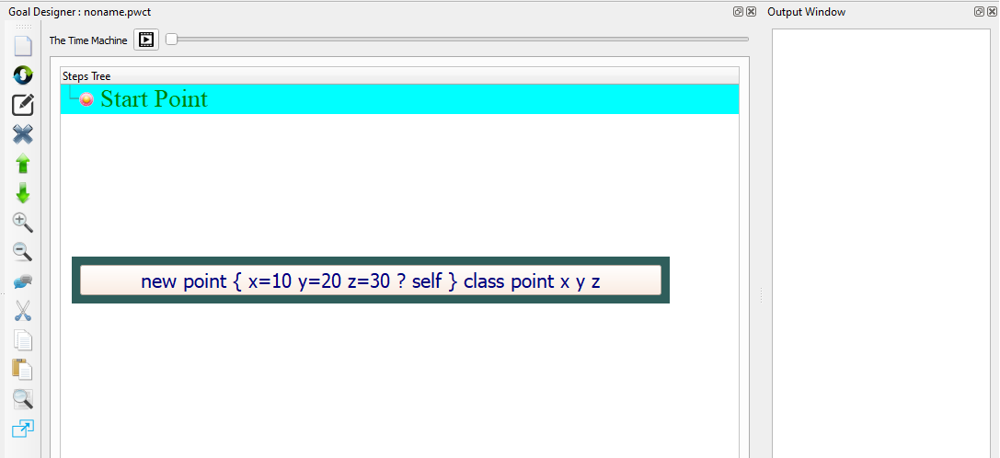
We get the visual output in the Steps Tree
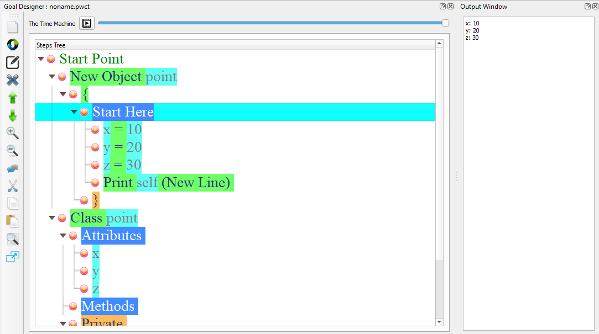
We can continue and write more code, for example using a (For Loop) and (If statement)
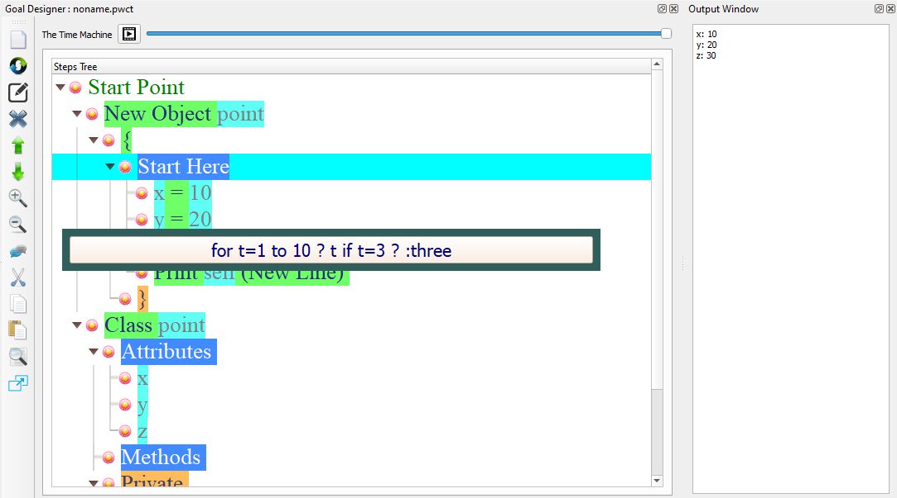
Again, we see the output in the steps tree
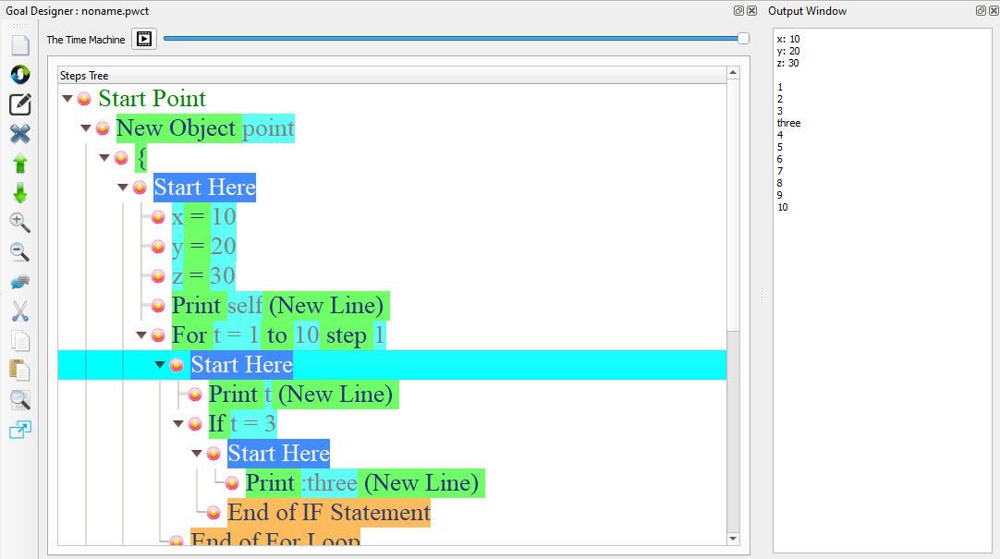
We can define three functions (one, two & three)
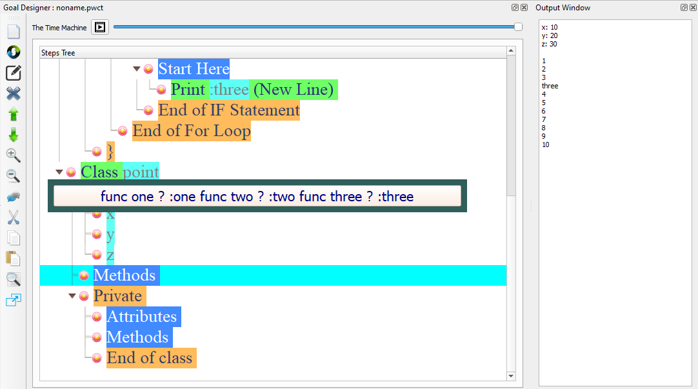
The steps tree are updated
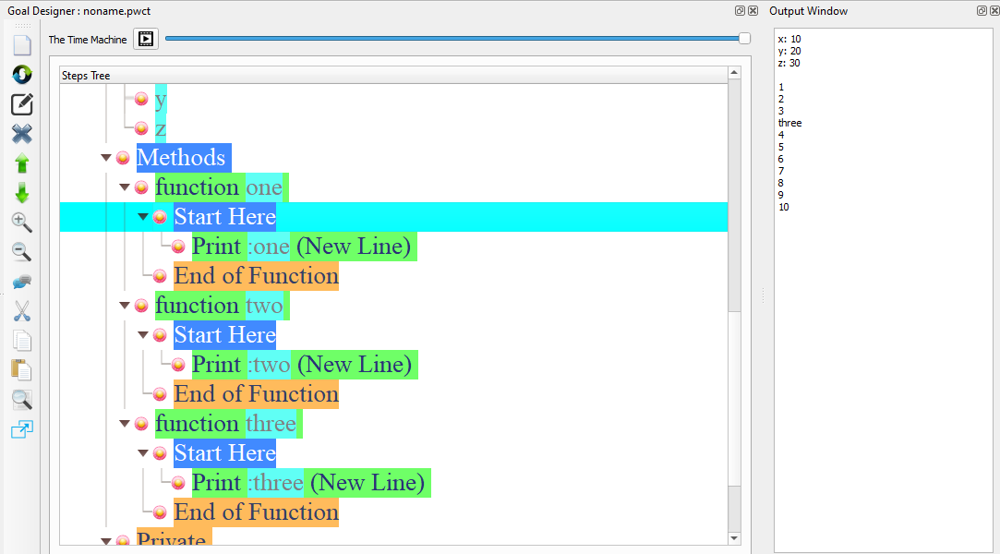
We can call these functions
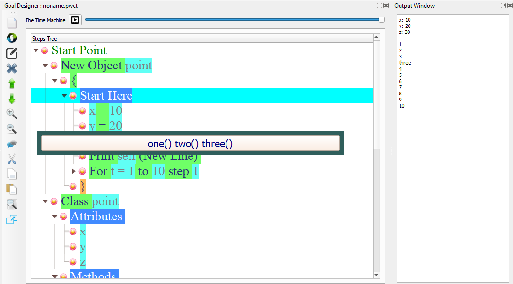
So, if you are a Ring programmer and know how to write textual Code, You can reuse this knowledge and PWCT will not get in your way!
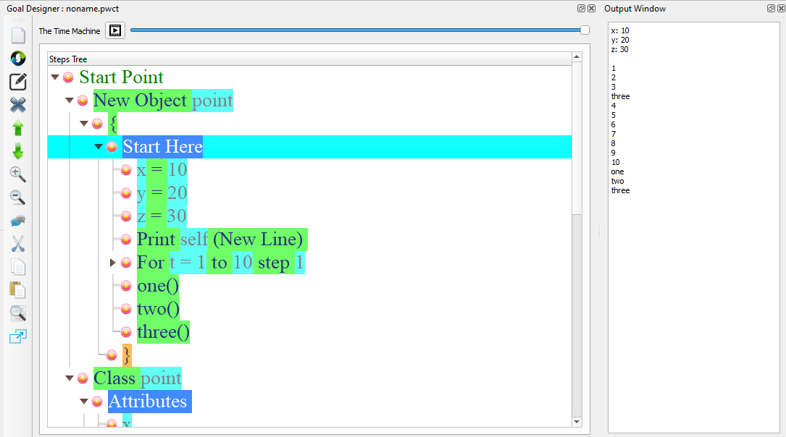
Import Textual Source Code Files
PWCT 2.0 comes with Ring2PWCT that can import any textual source code file.
We imported all of the Ring applications and samples
For example the next screen shots for the Flappy Bird 3000 game
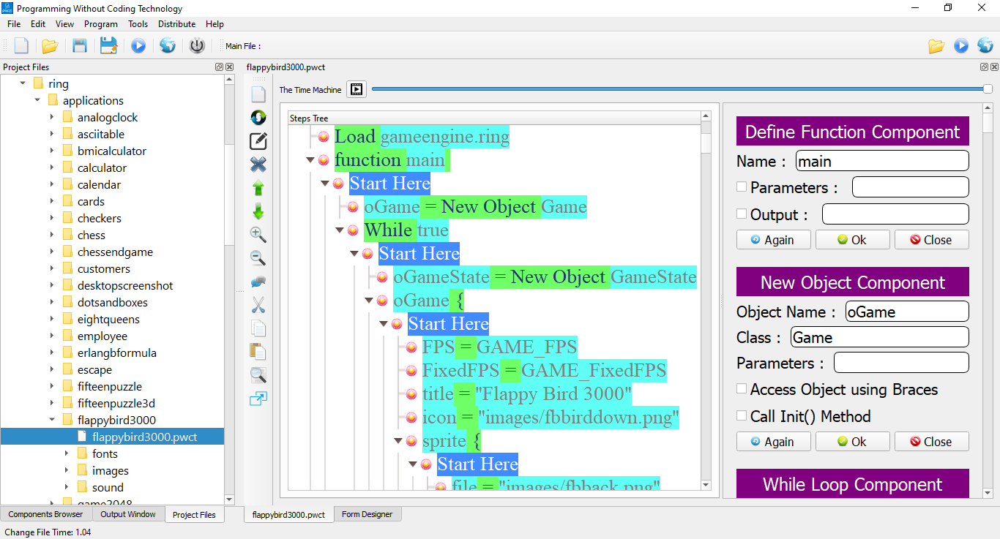
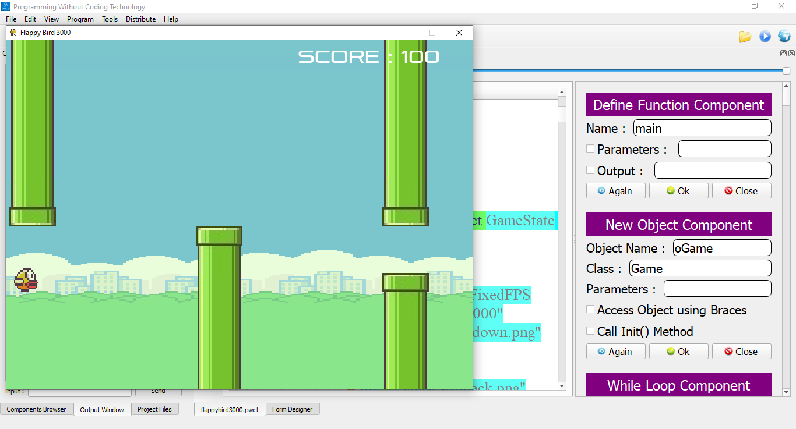
Improving the Implementation
In the second generation of PWCT, we worked on solving all of the reported problems in the design and implementation of the first generation. Also we implemented most feature requests that are useful and improve the flexibility of the product.
Open Many Files
PWCT 2.0 Support opening many visual source files at the same time
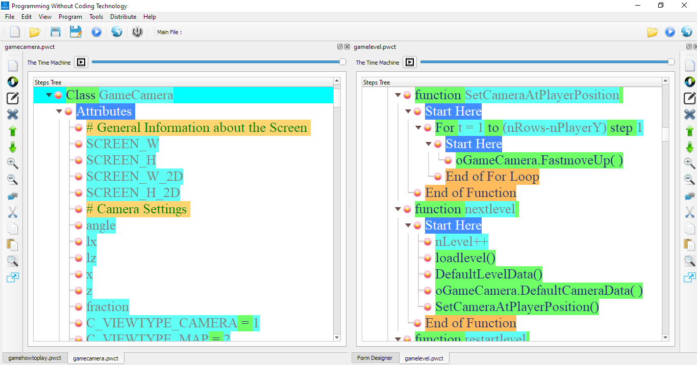
Inserting Steps
PWCT 2.0 support starting new interactions at any location in the steps tree (Not just Start Here steps)
The new steps will be inserted in the right location
This feature is supported while using components, Ring2PWCT and Paste operations
Auto-Complete
In PWCT 2.0 Interaction Pages, we have better usability through default values, search in listboxes and better auto-complete.
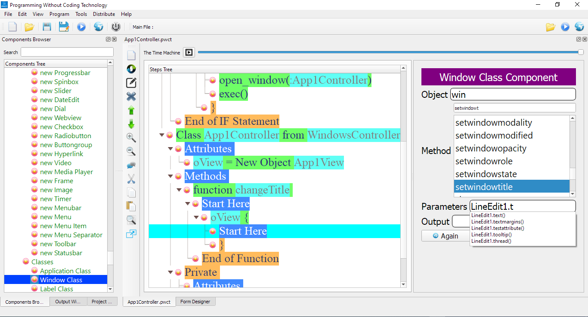
64-bit version
We have 64-bit version of the software (no longer limited to ~4gb of memory)